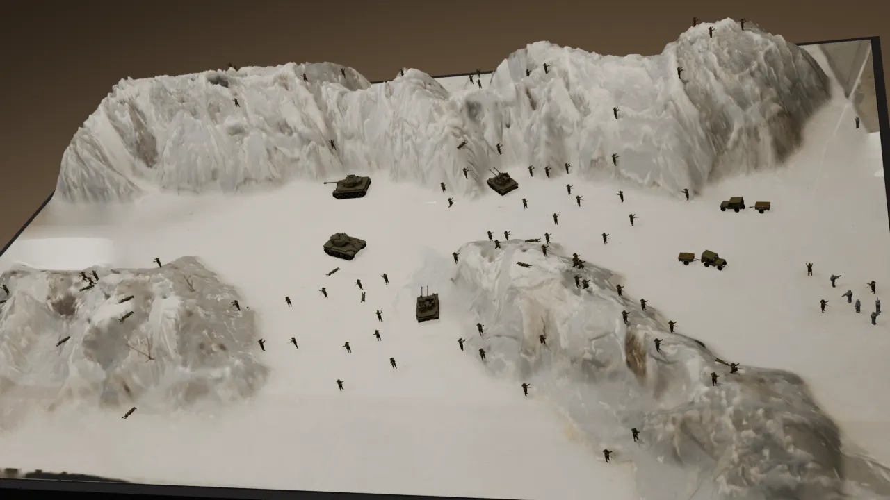
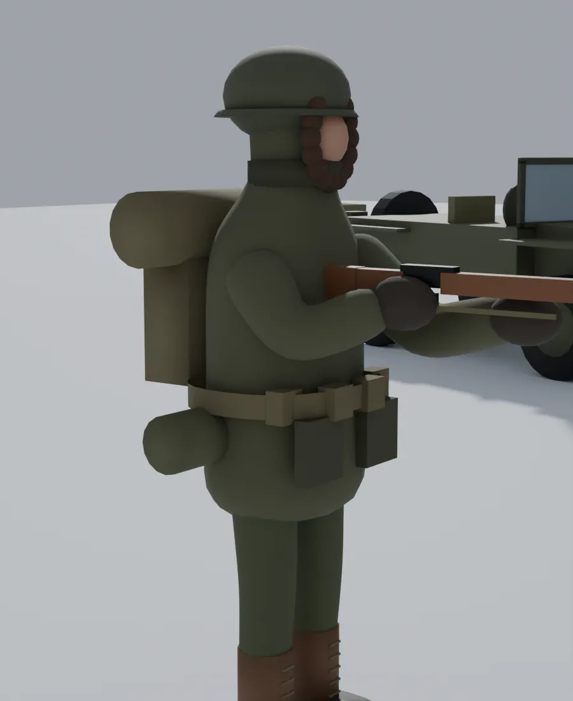

Turning dormant archives into living encounters
Immersive Remembrance: AI-Driven Archival Retrieval for VR Learning is a three-year applied research project funded by the Institute of Museum and Library Services.
A shrinking generation, a growing archive
Fewer than 45,000 World War II veterans are still living, and roughly 131 die each day. What they told us survives in oral histories and personal testimony, much of it held by small and mid-sized museums. For most visitors, those transcripts are too long to take in. Their stories risk becoming a line on a placard.
Immersive learning environments produce stronger outcomes in historical empathy and retention than traditional media. Yet today's museum VR is hard-coded by specialist teams: every new story or new institution means another costly development cycle. Most of America's 33,000+ museums are shut out.
The Living Archive VR Framework
The framework joins two things that rarely meet: a 3D, hands-on artifact experience in VR, and a retrieval engine that searches the museum's authenticated testimony. Generative AI is not asked to write history. Retrieval-Augmented Generation is used strictly as a semantic router that finds the right passage and delivers it unchanged.
Curate
Museum staff and the team digitize oral histories, divide them into thematic segments, and tag them with controlled-vocabulary Dublin Core metadata.
Index
The verified segments are embedded into a secure vector index held by the museum.
Interact
In a wireless headset, a visitor handles a 3D artifact. The context of that interaction becomes the query.
Listen
The best-matching authentic passage plays as spatial audio with text placed in the scene, targeting a response in 500 ms or less.
Why voice and presence belong together
The design rests on the Cognitive Affective Model of Immersive Learning (CAMIL; Makransky & Petersen, 2021). CAMIL holds that VR's two core affordances, presence and agency, do not produce learning by themselves. They help when paired with scaffolding that keeps cognitive load manageable.
Here, the scaffolding is the veterans' own testimony, delivered at the moment a visitor is most curious about an object. Our target outcome is historical empathy: not sympathy, but the harder work of understanding people in the context of their own time (Endacott & Brooks, 2013).

Commitments we build in from the start
The museum owns the narrative
The engine can only return what the museum has verified and approved. Nothing is synthesized or paraphrased.
Rights first, then digitization
The first step is a condition and rights assessment with AVMA. Family permission is obtained before memorial material is shown.
Personal details stay protected
Home addresses and identification-tag inscriptions are blurred. Visitor study data is de-identified before any release.
Documented vs. reconstructed
Every 3D record shows which parts are photographed, which are sourced and which are inferred. Uncertain identifications are labeled provisional.
Built to travel
An advisory cohort of museums with very different collections reviews the framework at six summits, stress-testing it well beyond military history.
Free to reuse
Code, manual and data will be released under open licenses so modestly funded institutions can adopt the framework.